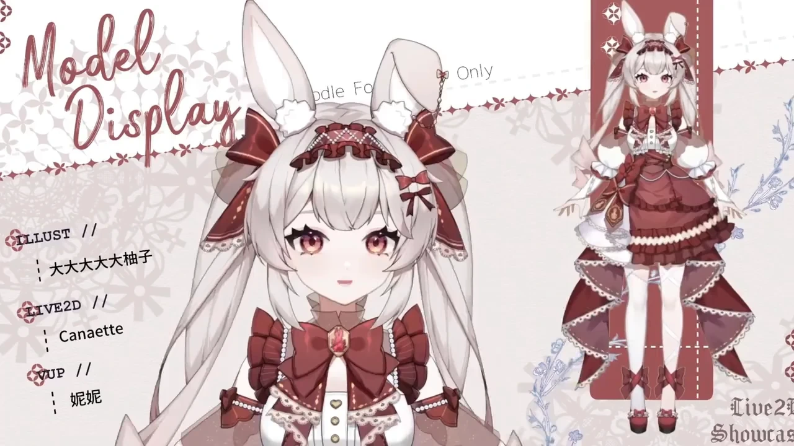
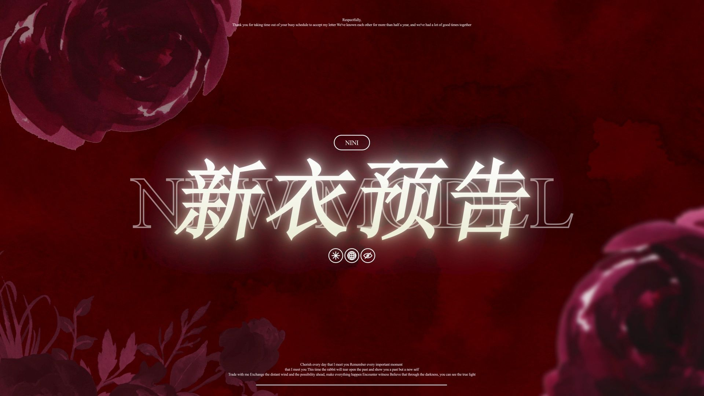

概览
栗妮亚_nini是活跃于哔哩哔哩的虚拟UP主与虚拟主播，主要发布翻唱、直播及原创角色叙事内容。兔耳是其公开形象的常见特征，发色与瞳色随造型变化，并在不同作品中使用多套Live2D与3D形象。主账号与相关录播账号共同保存直播回放、模型展示、切片与纪念内容，内容涵盖日常直播与“小兔宇宙”角色故事等不同方向。
2026年10月资料更新：新增三周年“小师妹”新衣专题，展示全身造型与黑、白发版本；补入7月后的9项音乐与合作作品及新衣周年庆与生日直播等活动。账号和回放统计记录于10月22日。
“自由的灵魂永不困顿于荆棘。”
栗妮亚_nini · B站个人签名
账号与合集数据记录于，不代表实时数据。主页投稿数按空间网页的展示口径记录；直播回放系列单独统计，不与投稿数相加。回放场次日期取自原标题，另行注明实际投稿日期。未见公开正式名称的造型采用“非官方暂称”，角色关系只陈述作品已明确的线索。
基本信息
创作与作品
栗妮亚的投稿以演唱、直播衍生内容、模型展示和原创角色叙事为主要组成部分。2026年10月22日核对的主页“合集和系列”页面共列出7项内容集合（6个合集、1个回放系列）；以下数量均为该日快照，既有持续更新的翻唱与回放，也有用于了解角色和创作路径的专题合集。
近期作品（2026年7—10月）
7月后继续发布翻唱与合作演唱，包括《黑凤梨》《历历万乡》《天灵灵地灵灵》《月出》《花骨朵》《歌》和《蝴蝶》。《歌》的投稿说明提到视频使用过去三年拍摄的风景素材；合作作品另保留原发布账号和分工，不将参与演唱等同于独立投稿。
音乐投稿
“大栗兔的翻唱”收录62个视频，“无后期瞎唱”收录11个视频。歌曲选择与演唱投稿构成账号长期稳定的内容线。
原创叙事
OC角色PV、新衣回剧情，以及白兔、樱花兔兔与弥赛亚等形象的故事逐步补充“小兔宇宙”；相关设定仍处于持续展开阶段。
模型与视觉
“大栗兔的模型展示”收录10个视频，记录Live2D、红黑衣装及其3D版本等形象内容。
切片与回顾
“兔兔切片”等集合从直播中提取游戏、杂谈与纪念片段，和完整回放共同构成公开活动记录。
早期代表内容
直播活动
栗妮亚长期进行歌回、杂谈、游戏和日常陪伴直播，并由主账号与相关录播账号共同保存回放。截至2026年10月22日，主账号“直播回放”系列收录1159个视频，本次可见的回放记录覆盖2023年12月7日至2026年10月21日；2023年9月至12月的早期直播记录可在“栗妮亚的录播号”查阅。公开回放中常见时长约2至5小时，是了解其直播风格与活动轨迹的主要公开来源。
“栗妮亚的录播号”（UID 3546381977389256）的“2023年度直播回放”合集收录104个视频；其中《【首播】2023-09-03 初次见面！我超紧张！》标题明确记录首次直播日期为2023年9月3日，回放投稿于次日发布。
演唱与学歌
歌回、选曲练习、学歌过程与无后期演唱。
杂谈与陪伴
早安回、日常聊天、工作或自习陪伴。
游戏实况
《奥日》《节奏天国》《纸嫁衣》《洛克王国》及互动游戏等。
纪念活动
百日、生日、周年、节日回与阶段性回顾。
连麦与活动
BW相关连麦、活动交流及与其他参与者的实时互动。
完整回放
长时录播保留现场语境，与短切片形成互补。
代表回放
上述日期按标题所记直播场次标注。9月13日“新衣！周年庆！”回放于9月14日发布；10月21日生日回放于10月22日发布。回放说明未列出新衣的正式名称与制作署名。
经历
公开早期Live2D模型展示
发布目前主页可见的早期模型展示，展示了白发、兔耳与红瞳等核心识别特征。
首次直播
“栗妮亚的录播号”保存的《【首播】2023-09-03 初次见面！我超紧张！》明确记录首次直播日期；回放投稿于2023年9月4日。
发布自我介绍曲
以《小小世界》为原曲，由栗妮亚_nini填词并翻唱，用歌曲介绍主播身份与创作方向。
主账号回放系列与OC叙事展开
2026年10月22日的快照中，主账号“直播回放”系列可见最早记录为2023年12月7日，记录延续至2026年10月；12月22日发布OC角色PV并负责配音、文案。9月至12月的更早回放可在“栗妮亚的录播号”2023年度合集中查阅。
发布一周年纪念专栏
以《栗妮亚一周年了，有很多话想说》回顾阶段经历。
发布红黑衣装模型展示
《嘘，枯萎玫瑰在无人处盛放》展示礼裙、玫瑰头饰、眼镜与配套UI。这是模型展示的投稿日期，5月的新衣活动另行记录。
另行发布“白兔登场”故事片段
《【兔兔故事】生日回录播，白兔登场》上传于该日，内容已逐段比对为2024年10月21日生日回的故事片段。查看故事片段
黑芭蕾新衣与弥赛亚故事
本人公告安排6月30日20:00【答约伯书】黑芭蕾弥赛亚新衣活动；7月1日发布角色故事，简介称“反派弥赛亚”，并使用“小兔宇宙构建中”。活动日期与故事投稿日分别记录。新衣公告
樱花兔兔生日新衣活动
本人10月14日邀约使用“樱花兔兔的初见”，预约10月21日20:00生日庆会。《告死鸟》等2026年投稿为后续出镜记录。本人邀约
红黑衣装的3D版本出镜
先后出现在《情兔节快乐》和《寄明月》MMD中，展示面部细节、全身轮廓与服装动态。
樱花兔兔在《告死鸟》中出镜
白粉花枝造型出现在《告死鸟》翻唱中，随后继续见于《凶狠吉娃娃》《天干物燥》等投稿；该日为翻唱投稿日。
白兔在《融化的第五个夏天》中再次出镜
歌曲翻唱投稿使用白兔的白芭蕾造型，与2024年生日新衣回中的白发、玫粉缎带和白色礼服相对应。
生日直播
“祝我生日快乐！”20点场直播回放于10月22日投稿，两个分P合计4小时50分41秒。查看生日回放
角色与世界观
栗妮亚的部分投稿以“小兔宇宙”为持续构建中的叙事框架。现有公开材料尚未形成完整的角色谱系，以下记录可确认的角色形象、作品明确使用的角色名与关系线索；未公开正式名称的角色形象保留暂称，不对尚未说明的设定作补充推断。
栗妮亚
公开角色叙事的中心形象。在相关作品中，栗妮亚_nini除承担表演和配音外，也参与填词、文案、策划、脚本及剧情创作。
白兔
白兔故事与白色芭蕾新衣出现在2024年10月21日【梦境·回溯】生日回；2025年3月另行上传的“白兔登场”片段与该场内容一致。本人2025年黑芭蕾邀约也使用“白芭蕾”称呼，白色造型后来见于《融化的第五个夏天》。
查看原生日回白兔故事樱花兔兔
本人2025年10月生日新衣邀约使用“樱花兔兔的初见”，以初始小兔与樱花的相遇介绍活动，预约10月21日20:00见面。白粉花枝造型随后出现在2026年《告死鸟》《凶狠吉娃娃》《天干物燥》等投稿中。“樱花兔兔”采用本人称呼，角色关系以公开故事为准。
查看生日新衣邀约形象与衣装
配图取自本人公开投稿；点击图片可查看原视频。
三周年新衣 · 小师妹
初期形象

荆棘女巫 · 红黑衣装
黑色蕾丝帽、深红玫瑰、金属框眼镜与不对称礼裙相配，网纱手套、珍珠链和红色宝石点缀其间。
Live2D原画：大大大大大柚子；建模：canaette。3D模型：绝梦梦梦梦梦梦梦梦；转换与物理绑定：FixEll。
黑芭蕾 · 弥赛亚
樱花兔兔
白兔 · 白芭蕾
制作与合作
栗妮亚的模型、歌曲与角色作品由多位创作者共同完成。以下署名按具体作品整理，只表示该作品中的公开分工，不代表固定团队、长期合作关系或私人关系。
图集
图集按作品与形象收录公开封面、模型展示和动态画面。点击图片可跳转到对应B站投稿；项目中的原始图片文件均保留，画面版权归原作者及相关创作者所有。

参考资料
条目优先引用栗妮亚_nini本人账号、相关录播账号、合集页与原始投稿。外部页面可能登录后才能查看，标题和统计数字也可能随平台调整。账号、合集与回放数量已于2026年10月22日重新核对。主页投稿数采用空间网页的显示口径；回放场次与发布日分别记录。
本轮记录的数值、原投稿日期与场次日期另见2026年10月22日资料快照。数值会随平台变化，接口与空间页的不同统计口径不直接互换。
三周年新衣的活动来源、画面位置与配图出处见2026年10月23日新衣资料记录。
早期衣装的称呼、活动时间、投稿日期与制作署名复核见历史衣装校订记录。
白兔原生日场次、新衣模型与故事片段的交叉核验见白兔确认记录。
阅读与命名原则
- 优先采用本人账号、相关录播账号、合集页和原始投稿中明确出现的名称与分工。
- 角色名已经明确时优先使用角色名；未见公开正式名称的角色形象或衣装使用“非官方暂称”，并保留原始投稿标题。
- 角色关系只写作品明确的线索，不将视觉相似或标题修辞扩展为确定设定。
- 更新统计时同时记录来源与记录日期；无法核实时保留历史快照，不根据搜索摘要、第三方切片或日期推算新增事实。
请尝试其他关键词。